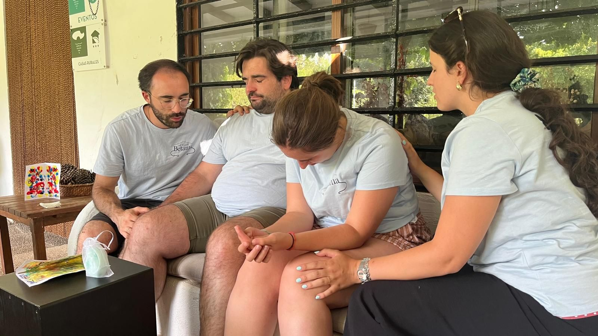
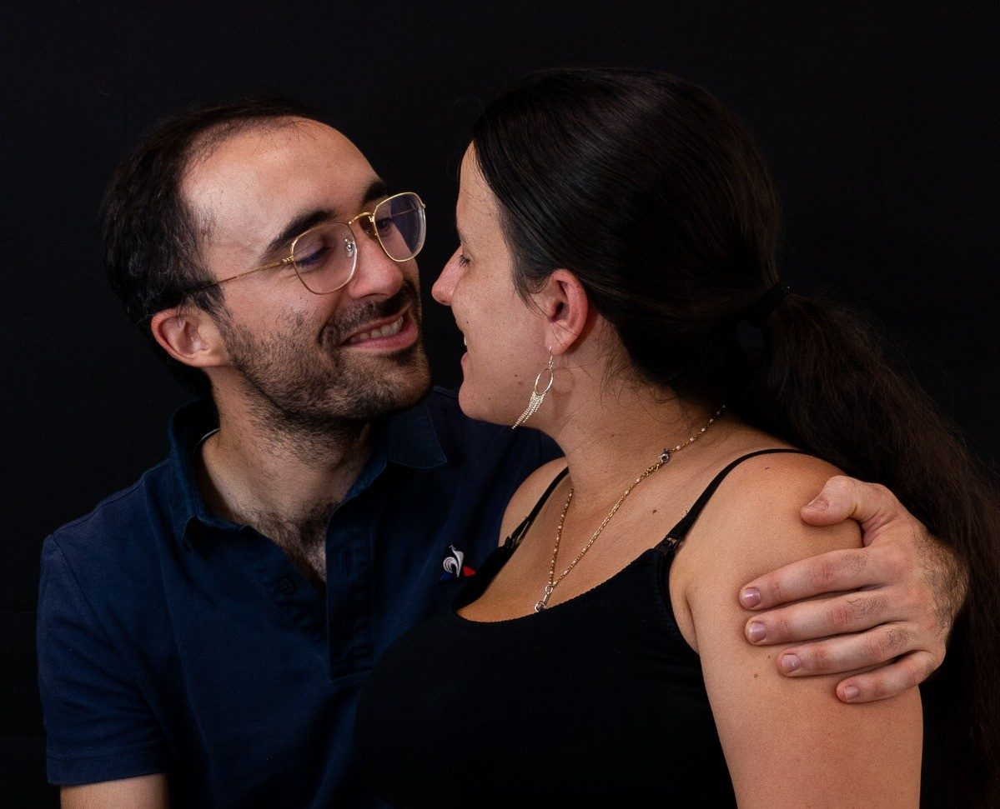
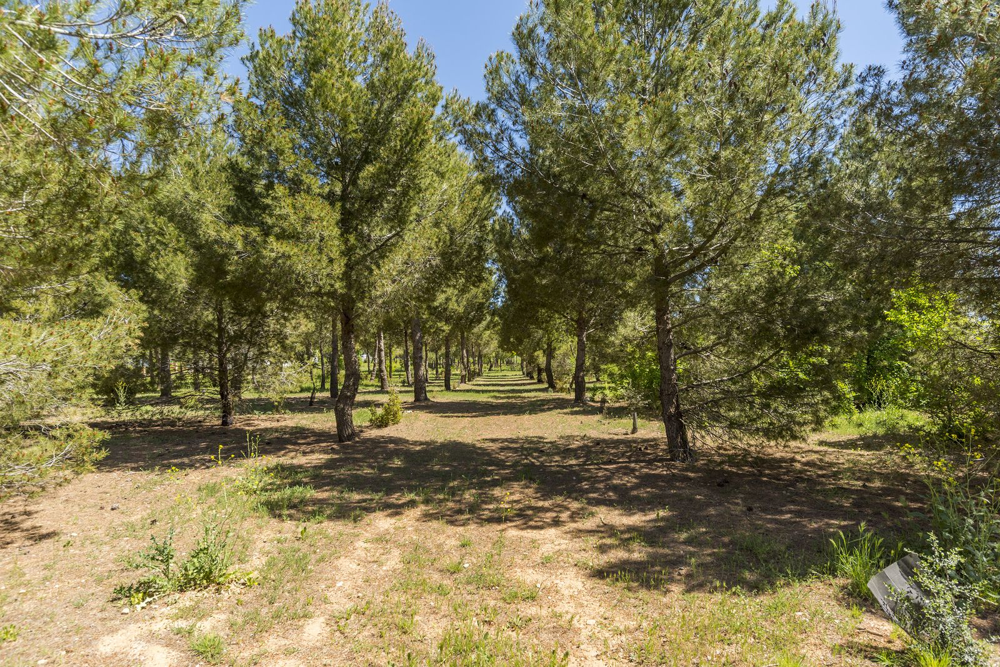
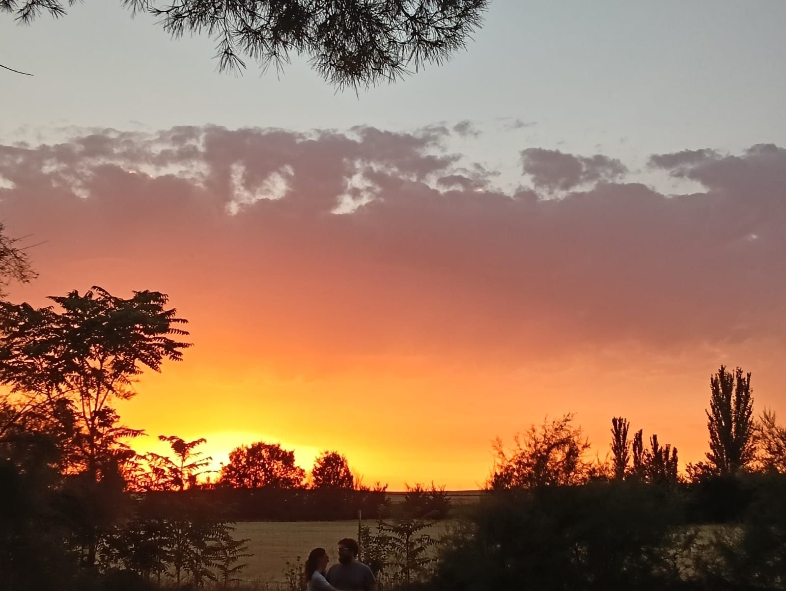
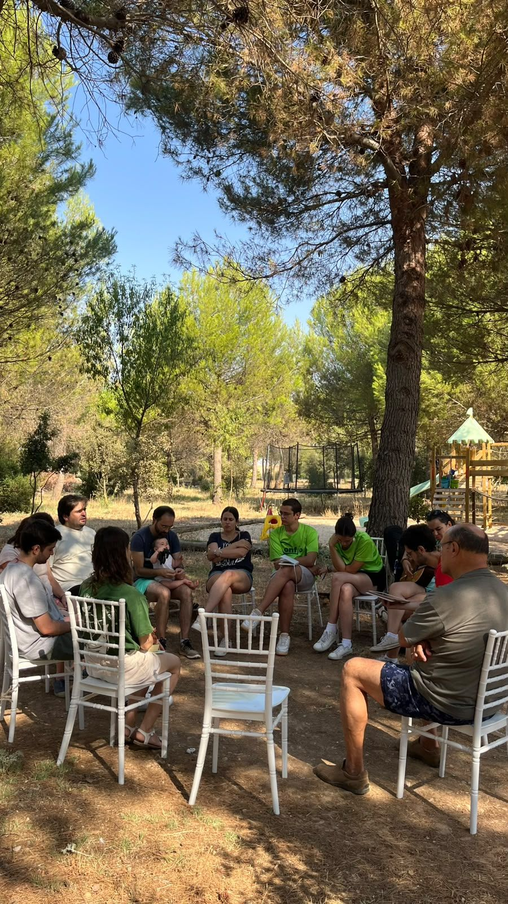
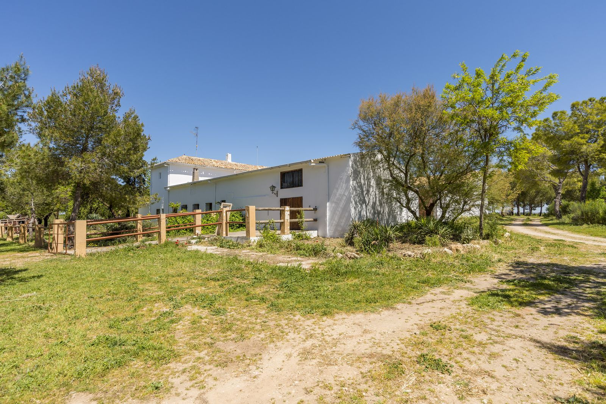

Unción
La presencia de Dios en nuestro sacramento del matrimonio lo transforma todo. Queremos que aquí respires su gracia.
María y Pablo, un matrimonio joven, y nuestros hijos.
Vivimos la fe en la Renovación Carismática y hemos sentido una llamada muy concreta del Señor: el apostolado como matrimonio con hijos, en medio de un mundo que necesita Amor.
En el peor momento de nuestro matrimonio, Dios puso en nuestro corazón el deseo de crear un lugar que fuese tierra de misión y evangelización. Lo buscamos con pasión y el 8 de julio de 2025 lo encontramos. Orando, le pusimos nombre: Hogar Betania.
Como la casa de Marta, María y Lázaro en Betania, donde Jesús descansaba entre amigos, queremos que esta casa sea un hogar donde cualquiera se sienta esperado.
María y Pablo

Queremos que cada persona que cruce este umbral experimente lo que somos como matrimonio en Cristo.

La presencia de Dios en nuestro sacramento del matrimonio lo transforma todo. Queremos que aquí respires su gracia.

Abrimos las puertas para aliviar a quien necesita calor en el corazón y un amor de hogar que acoge con los brazos abiertos.
«Venid a mí los cansados y agobiados» (Mt 11,28)

Es lo que Dios está haciendo con nosotros, y quiere que seamos sus instrumentos para que otros emprendan también su camino de transformación.
Hogar Betania es tierra de misión para nuestro matrimonio, pero no es solo para nosotros: sentimos que Dios nos llama a abrirlo a su Iglesia.
Como Iglesia necesitamos lugares donde encontrarnos, orar, alabar y disfrutar en familia, en comunidad o entre amigos. Aquí organizamos encuentros, campos de trabajo con jóvenes y convivencias, y acogemos retiros de grupos parroquiales, jóvenes, familias y comunidades que quieren reconectar con el Señor en la naturaleza.

La casa principal ya está reformada. Ahora soñamos con rehabilitar 700 m² más.
Los muros ya están en pie. Rezamos para ver cómo desarrollan todo su potencial para las obras de Dios.

Síguenos en Instagram para ver el día a día de Hogar Betania, o escríbenos si quieres venir con tu grupo, echar una mano o ayudar a que este sueño crezca.